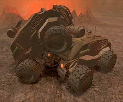

Modifying The Bulldog
Introduction
A lot of people will want to play around with the demo vehicle that comes with UT2003, the Bulldog. This page holds information about how to change certain aspects of the Bulldog.
The Bulldog in UT2004 is the same code, but due to the move of KVehicle from a subclass of Pawn to a subclass of Vehicle, and with all the other changes that took place for Vehicle support in UT2004, the Bulldog is broken. To fix it, see the UT2004 Fix section on the Bulldog page.
Tutorials
Making the Bulldog drive faster
This question was asked on the BU coding forum and is interesting because it needs general insight on how acceleration and speed are done on vehicles in general. To find out about this, an important function to observe is the following function taken from the KCar class:
// Tell it your current throttle, and it will give you an output torque // This is currently like an electric motor function float Engine(float Throttle) { local float torque; torque = Abs(Throttle) * Gear * InterpCurveEval(TorqueCurve, WheelSpinSpeed); GraphData("SpinSpeed", WheelSpinSpeed); GraphData("Torque", torque); return -1 * torque; }
It calculates the torque of the wheels using Throttle (player presses up or down), the gear (forwards or backwards) and the wheel spin speed in combination with a torque curve. The calculated torque is in its turn applied to the KMotorTorque property of the KCarWheelJoint associated with every tire (KTire.WheelJoint). So to increase the maximum speed of the Bulldog or its acceleration, we only need to change the TorqueCurve. This can be done in the Default Properties of a (user written) subclass by overriding the default value in the Bulldog class.
The default value for TorqueCurve in the Bulldog class is:
TorqueCurve=(Points=((InVal=0,OutVal=270),(InVal=200000,OutVal=270),(InVal=300000,OutVal=0)))
Note: If you are using UnrealEd you can't see the default properties section of the class in it's source. Instead, you can right-click the class in the class tree and choose 'Default Properties...'. The above value will be under the KCar rollout.
Basically this value of TorqueCurve means the acceleration will be constant while wheel spin speed is between 0 and 200000, and that it will linearly decrease between 200000 and 300000. For RPM, these values will probably need to be divided by 65535 (see  KarmaReference). The InterpCurveEval function will probably work the three coordinates in a curve so the actual "wheel-spin → torque" relation will be a somewhat smoothed out version.
KarmaReference). The InterpCurveEval function will probably work the three coordinates in a curve so the actual "wheel-spin → torque" relation will be a somewhat smoothed out version.
To increase the maximum speed of the Bulldog, you can simply make the torque last on higher wheel spin speeds by increasing the last two InVal numbers.
To increase the acceleration of the Bulldog, you can increase the value of the OutVal properties. This will not have a very noticable effect though, because the wheels will slid very much. But decreasing acceleration works very well.
Be carefull though, the Bulldog is not build on such high speeds. The front wheels will quickly lift from the air and make steering impossible, and you'll run into some rock eventually and fly miles away. Of course, the steering problem could in its turn be worked around by deviding the weight of the Bulldog to have more mass in the front. Something that could be covered in a tutorial on coding Karma objects I think.
Using the TorqueCurves for Gears
Kaoh: I would like to add some info to the TorqueCurve info, first time so i hope I do it correctly  .
.
Note To do this you need to subclass the Bulldog, you cant do this when you place a bulldog or something.
The Curve can be build with as much points as you want. All points consist of 2 pairs the InVal and OutVal as shown above. The Outval is the acceleration the vehicle will have, the Inval specify's the wheelspin range for what this OutVal is valid for. Check the above examples for more info on this.
This means that the acceleration will always be only attached to the wheelspin. With gears you want to simulate the loss of acceleration when the car drives too slow for that gear, this can't be done with one Curve.
Think of this as Gears in a car where you actually change the gear to get a better Curve for that speed.
The best way to do that is to specify multiple gear ratios.
TorqueCurve[1]=(Points=((InVal=0,OutVal=270),(InVal=200000,OutVal=270))) TorqueCurve[2]=(Points=((InVal=0,OutVal=2),(InVal=200000,OutVal=270),(InVal=300000,OutVal=0)))
This will make it so that in the first gear you can only go up to 200000 wheelspin but with good acceleration. In the second gear you will now accelerate really bad till you hit that 200000 wheelspin and then accelerate good up to 300000.
This is rather simple to implement to a vehicle with gears.
You can now simply change the code in the engine function to use the correct Curve and add some code that switches gears.
// Tell it your current throttle, and it will give you an output torque // This is currently like an electric motor function float Engine(float Throttle) { local float torque; torque = Abs(Throttle) * Gear * InterpCurveEval(TorqueCurve[Gear], WheelSpinSpeed); GraphData("SpinSpeed", WheelSpinSpeed); GraphData("Torque", torque); return -1 * torque; }
As you can see I made of the TorqueCurve a Array so you can easely add more curves depending on the amount of gears you want.
This way you can let a fith gear accelerate almost to none but a first gear with good speed.
Note The actual speed of the vehicle is based primairly on the Torque that is genererated on the wheels. The second major factor is the size of the wheels. When you increase the size of the wheels and keep the torgue the same, you will drive faster because very simply the rotation stays the same.
I hope this helps some people.
Thanks to Bjorn for giving this info in the first place, helped me out a lot
Birelli: If I'm reading the above code right, it needs a slight tweak in that you can't both multiply by the current gear AND reference the correct torque curve with it, unless your torque curves are all going to take into account the fact that when you kick the bulldog into second gear you're going to automatically double the torque. I think if you actually used that code above it would be readily apparent that there was a problem with it the first time you shifted gears and your acceleration suddenly doubled .
Foxpaw: Actually the approximate speed of the vehicle is based on the rate at which the wheels are turning multiplied by their radius, multiplied by the "coefficient of traction" which is some mangled native version of the friction of the wheels on the ground. Torque causes the wheels to accelerate. They will cease accelerating when their torque and their angular resistance to acceleration reach equilibrium. If the same amount of torque continues higher, it will increase max speed, but only to a point. (The default bulldog does not reach the equlibrium.) You might also consider than the first curve in the above will allow you to get maximum torque at ANY wheel spin speed, you need to terminate it by having the last value be 0 or whatever amount you wanted for the wheels to reach the equilibrium point. I'll refactor this into the above someday. 
Adding Shadow to the Bulldog
If you have driven around with the Bulldog you must have noticed that it didn't have any shadow. Adding shadow to the Bulldog would make blend much more realistically into its environment. There's a reason for not having shadow on the Bulldog though, it's because it is slow. It's even very slow when viewing the Bulldog from very close (only tested on Radeon 8500, needs confirmation for other cards). But slow or not, let's add it anyway.
Create A Subclass of the Bulldog, eg "MyBulldog" in your own "MyPackage". Once you've set that up, read on. In UT2003, shadows are cast by ShadowProjectors. Our own Bulldog will need a shadow projector associated with it so add this variable:
var ShadowProjector BulldogShadow;
We only have to make sure that the shadow is spawned as soon as the Bulldog is spawned. This can be done in the function PostBeginPlay(). The spawned shadow will also need to be removed as soon as the Bulldog is removed. This can be done in the function Destroyed(). Here's the code to add to you MyBulldog class:
simulated function PostBeginPlay() { Super.PostBeginPlay(); if (Level.NetMode != NM_DedicatedServer) { BulldogShadow = Spawn(class'ShadowProjector', self, '', Location); BulldogShadow.ShadowActor = self; BulldogShadow.bBlobShadow = false; BulldogShadow.LightDirection = Normal(vect(1,1,6)); BulldogShadow.LightDistance = 1200; BulldogShadow.MaxTraceDistance = 350; BulldogShadow.InitShadow(); } } simulated function Destroyed() { if (BulldogShadow != None) BulldogShadow.Destroy(); Super.Destroyed(); }
Notice that we don't need to update the shadow ourselves, the ShadowProjector will take care of that in its Tick() function. At this stage only the chassis of the Bulldog will cast a shadow. Of course, this doesn't look quite right so we'll need to add shadow to the tires too. I'll leave it to your own practice to subclass BulldogTire with your own MyBulldogTire class and add shadow casting to it.
Now I assume you have created a MyBulldogTire class and added shadow casting to that one. We still have to make our MyBulldog class use those tires. KCar has declared two variables for us to use for specifying the tires of any such vehicle:
var (KCar) class<KTire> FrontTireClass; var (KCar) class<KTire> RearTireClass;
Notice how the Bulldog class sets these to BulldogTire in its own defaultproperties. We will set them to our own tire class like this:
defaultproperties { FrontTireClass=class'MyBulldogTire' RearTireClass=class'MyBulldogTire' }
And we're done. Our Bulldog and its tires will now be casting a nice shadow on the ground as well as on other static meshes like other Bulldogs. Here's a screenshot showing off the effect:

|
Related Topics
Discussion
Bjorn: Please comment. It's my first real addition to the Wiki so I would like to know if it's ok. Also, any requests on more info are welcome.
Highlander: Looks great, i was wondering if there was any bot support (ie: ai controlled vehicles) at all.
AZTEX: Very cool, I wonderd how to increase the Bulldog's mass to make it less like a fether and more like well a brick with weel's "which it is!" (aztex_original@hotmail)
Bjorn: Thanks for these suggestions. I'll look into the AI and weight, but I don't think AI will be easy if at all doable.
AlphaOne: I think there is a solution to fast spinning wheels. It was outlined in the Karma reference at UDN. It shows that for fast spinnig hinges there is a special value that can be set to TRUE to prevent calculation errors.
Bjorn: Thanks, I'll try this out.
Kaoh: I added some Gear for TorqueCurve info, I hope i did it correctly it is my first change on Wiki. If it doesnt have enough new value please feel free to remove it again.
Chema: To tweak the Bulldog on the fly, get on it and do a "editobj bulldog" in console (and, if you have not tryed before, give a look to "editobj xPawn" -player- and "editobj LevelInfo0" -wolrd-). More Console Commands/Debugging Console Commands.
Foxpaw: This may not work for all parameters - the Karma physics are only updated if you call the relevant function after changing it's values. This will work fine for some things like the torque curves, however.
AlphaOne: About the 'Slow Shadows' — to solve the problem just use proxy geometry to cast shadows. Use somthing low poly, such as the shapes used by KARMA to calculate collisions. That should increase the performance.
The_Watcher: Does anyone know how to go about using proxy geometry to cast shadows. I am a little confused. Thank you.
Solid Snake: What he means is that the Bulldog mesh itself has a lot of polygons and so on, which is probably not needed in creating a rather accurate yet blurry shadow. What he means is that when you want the shadow, spawn another actor which has a similiar shape to the Bulldog but a lot less polycounts and since that shape[aka 3D model] has less polys and then generate the shadow from that mesh and it will be much quicker.
Daid303: It is in the text above, but not very clear
If you want it faster: TorqueCurve=(Points=((InVal=0,OutVal=270),(InVal=400000,OutVal=270),(InVal=500000,OutVal=0)))
If you want it faster accalitation: TorqueCurve=(Points=((InVal=0,OutVal=500),(InVal=400000,OutVal=500),(InVal=500000,OutVal=0)))
Daid303: ProjectX if you are xtremely bored then help building up these pages: Vehicles KVehicle KCar
ProjectX: I would but my train of thought is solely on mapping, get anywhere near coding and it de-rails, killing all the passengers (much like British rail really  ) Anyway i really like what your doing, but is it possible to get a 1st person view camera inside that thing? would be well good. And a sort of system that if the bulldog was not used in, say, 1 minute, it is automatically destroyed, lowers fps and also, if you drive into a pit you cant get out of, you die, respawn and wait a bit for a new bulldog. (lets just say ive done that more than once, (and not just on UT2K3 either) thankyou AA).
) Anyway i really like what your doing, but is it possible to get a 1st person view camera inside that thing? would be well good. And a sort of system that if the bulldog was not used in, say, 1 minute, it is automatically destroyed, lowers fps and also, if you drive into a pit you cant get out of, you die, respawn and wait a bit for a new bulldog. (lets just say ive done that more than once, (and not just on UT2K3 either) thankyou AA).
Daid303: The 1 min no use time isn't that hard, the "you're f*cked" code is a lot harder.
ProjectX: What i meant was that you'd kill yourself with your own weapon and then respawn and wait
Daid303:A sort like, you press AltFire, and you hear. Tick....Tick....Tick.... And the next thing you remember is ariving at the gates of hell.
ProjectX: You could, or you could just get them to shoot themselves with a rocket launcher, would be much easier, you dont need to code anything for that. Just have to shoot yourself.
Chema: Using your shield gun is more fun, and sometimes you can actually get out of the hole hammer-jumping! Of course, for the purist scripter, a "<TAB> suicide" would seem more logical
Chimaira: If you are making a copy of the bulldog in uED (almost) all of the default-propeteries are diffrent from the original bulldog...in some places there is no value over all.
So...just open the default-propeteries of your car and the bulldog and "copy" all that is in the bulldog-DP.
After you´ve done that you want to save your car right? So... save the package you made your car in.
It´s just one big problem......when you try to save your class with your own car it says "The file on disk(26,058)is larger than the file in memory(-1). Are you sure you want to overwrite it? 'yes/no'"
If you choose yes your file is deleted (-1 means nothing).
I´ve tested all the values that you need to change and i found out that it is the karma-value that messes up everything.
Does anyone know how i could prevent this error or(and) tell me about any other scripting-programs.
Daid303: Easy fix: Don't use UnrealEd (Use UCC make), it seems to messup as soon as you have InLine Objects (or how is that called?) After 1 rebuild with UCC make (with custom Objects in default properties), you can step back to UnrealEd (if you want, but there are much better tools out there)
ProjectX: Does anyone know where the Uscript for the bulldog is once uve exported the scripts, i cant find it to edit it in notepad!
BM.Deathwind: I suggest using UDE to edit code. It should be in the UT2k3 "System" folder (Or you can get it from http://unreal.epicgames.com/ ). It builds the class heirarchy too, so you can find it that way.
ProjectX; thanx, ive got that dun now, i only have one more problem, when i load the new bulldog in a level, it appears, but when i walk up to it, and press [use] i cant get in it. The code i've changed is on a separate page: ProjectX/Code
Kaoh: you need to change the triggers also, make a copy of the BulldogTrigger.uc and rename it, in there you can specify the correct class for you vehicle.
Chema: A question: to add shadow to the bulldog, you have to subclass it, and then change the Vehicles.Bulldogs in the map, or in Vehicles.BulldogFactory.VehicleClass, for MyPack.BulldogShadows. Or, as I did first, modifying the original Bulldog instead of subclassing it (Larry Wall's fault!). Of course, for VehicleDemo.ut2, the best way is to change Vehicles.BulldogFactory.VehicleClass, but what If I had several maps with spawned Bulldogs (but no factories)? I could edit the map, but how could I add the shadow to the original Bulls, only with code? Maybee with an intercepting function, like UT's SpawnNotify? Or redefining (oscuring?) the Bulldog?
Supose there is no nice ("objetive") way to do such thing, but you know, its a subjetive doubt 
Foxpaw: You could use a mutator to do that. That would likely be the best way.
Chema: But what would I do in the mutator? Redefine/obscure the bulldog class?
Foxpaw: Mutators have an event called CheckReplacement and a function called ReplaceWith. This allows you to replace all instances of a given class with another class. It is used, for instance, in the Arena mutator to change all of the weapons. Likewise you could use the mutator to replace all instances of the Bulldog with your new, modified Bulldog. That way no maps would need to be modified, and backwards compatibility would also be retained if people wanted to play a map containing your modified bulldogs but would rather use the default bulldogs. The mutator could look something like the following, with "NewBulldogClass" replaced with whatever the class name of your modified bulldog is. It might not compile or work quite right, I didn't test it. But you get the idea:
// Replace all class instances of 'BullDog' with 'NewBulldogClass'. function bool CheckReplacement(Actor Other, out byte bSuperRelevant) { if ( Other.IsA( 'BullDog' ) && !Other.IsA('NewBulldogClass') ) { ReplaceWith( Other, NewBulldogClass ); return false; } Super.CheckReplacement( Other, bSuperRelevant ); return true; }
Chema: On a less bizarre side, I'm planning to finish the sound and force feedback code of the bullye. Has anyone done it already?
Foxpaw: I don't have any force feedback devices so I haven't tested that but the sounds (at least the ones I played around with) work fine. There just isn't any sounds set into the sound variables. All of the function calls, etc. are already in place, you just need to add sounds in the defaultproperties.
Billy Boy: How would I go about making the Bulldog smaller? I want to half its size for a smaller indoor arena.
ProjectX (Finally decided to learn coding yay!!!): Billy, all you do is change the static mesh scale in the default properties. I suggest you start using an IDE such as conTEXT or UDE to do your coding since UnrealEd won' let you do advanced stuff like custom models.
Foxpaw: Actually you can, it's just not very convenient. I too would not recommend using UnrealEd to modify script though. I used to just use notepad, but now I use TextPad.
Erdrik: I've been messing around with vehicle code for awhile(submited a hovertank code in the vehicles section), but I haven't really mess around with the wheels to much. I've been trying to make smaller wheels by simply scaling down the bulldog tires, but some odd things start happening. The collision and staticmesh are scaled down, as it actually looks smaller and I can bounce grenades around it accuratly. BUT, the wheel itself rest on the ground as if it were still as big as normal, making it look like the wheel is floating a bit off the ground. I'm assuming this is becuase the new scal isn't set properly in the Karma and was wondering if anyone new where I could go in the code to fix this?
MythOpus: I had some messings with vehicle code too. Most of the stuff I did caused errors and locked my computer up. Sigh... Anyways, to fix your wheel problem, I imagine that you haven't changed the position of the wheels (relative to the vehicle of course ) . You'll have to experiment with this until you get what your looking for but if you look in the default properties and find a property called:
WheelFrontAlong=-100.000000 WheelFrontAcross=110.000000 WheelRearAlong=115.000000 WheelRearAcross=110.000000 WheelVert=-15.000000 // For vertical alignment I believe ;)
Erdrik: No I already did that. I'm not having a problem with the wheels location. The problem is that even tho the graphic of the wheel is scaled down it still rolls on the ground as if it were bigger. the strange part is that weapon traces and projectiles collide properly!?
MythOpus: Well, did you make a new collision for the wheels? It doesn't need one
Foxpaw: Well, since it's a KTire, it's magic for Karma purposes. The original bulldog tire has a Karma collision hull but also a traditional collisionradius and collisionheight - maybe one of those is being used for the tire simulation.
MythOpus: Are you sure that the KTire has a karma collision hull? When you turn on that view karma collision button, it doesn't show an collision...
Foxpaw: Ah. That's because it has a "Karma Primitive" collision but no polygonal collision. You can use both, but the tire has only one. The "Karma Primitive" collision has to be specified in the modelling program, but allows you to do perfect spherical collision and cylinder collision. You can view these collision hulls by checking the "Show Karma Primitives" menu item.
MythOpus: I see It all becomes clear at last.
WinterHummer: I like what you all the work for the bulldog but i'm having trouble getting it to drive faster in UT2004. I've done the fix but i've tried "KMaxSpeed" Nope
MythOpus: I don't really deal with the workings of vehicles (I believe they should be EASIER to code), but I think you're better off working with UT2004's version of the vehicle code. It's more stable and works better. I also remember the last time I spawned a bulldog in UT2004. It moved for around 2 seconds then it just died and nothing could budge it.
WinterHummer: You're probably right about just working with the ut2004 SVehicle Code but its missing something and that is drivesplit. You know like front wheel driver or rear wheel drive.I got the going faster to work but now I cant get the wheelspin above 100000 & change. Oh and changing the torecurve is having no effect.